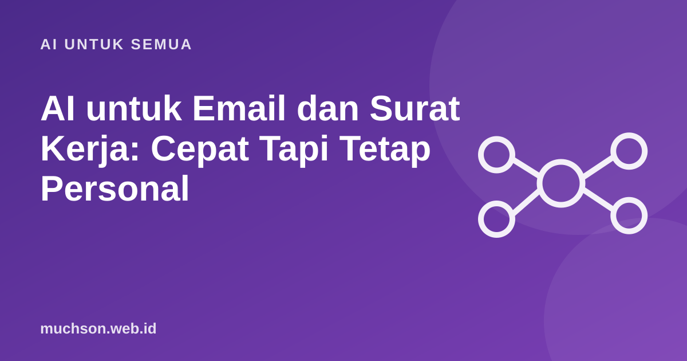

Beranda › Artikel › AI untuk Semua
AI untuk SemuaAI untuk Email dan Surat Kerja: Cepat Tapi Tetap Personal
Email adalah tugas yang paling sering dibantu AI: menulis draf, merapikan nada, mengubah panjang. Masalahnya hasil mentah sering terdengar generik. Kuncinya memberi konteks dan menyesuaikan sebelum mengirim.

Contoh sebelum dan sesudah
Pembuat prompt email
Sebelum mengirim
Agar terdengar seperti Anda
- Beri contoh email lama Anda dan minta meniru gayanya.
- Hapus kalimat pembuka yang terlalu berbunga.
- Gunakan nama dan detail spesifik, bukan kalimat umum.
- Baca keras-keras. Bila terdengar aneh, ubah.
Hati-hati
Jangan mengirim email sensitif (keuangan, hukum, personal) tanpa memeriksa setiap kalimat. AI bisa menambahkan janji atau fakta yang tidak Anda maksudkan.
Tanya jawab
Apakah penerima tahu email dibuat AI?
Bisa terasa bila terlalu generik. Personalisasi dan penyuntingan membuatnya wajar. Bila diminta, bersikaplah jujur soal penggunaan alat bantu.
Apakah aman memasukkan isi email ke AI?
Tergantung kebijakan layanan dan isinya. Hindari data sensitif; samarkan nama dan angka bila perlu.
Bagaimana membalas email panjang?
Tempel emailnya (tanpa data sensitif), lalu minta ringkasan poin yang perlu dijawab dan draf balasan untuk tiap poin.